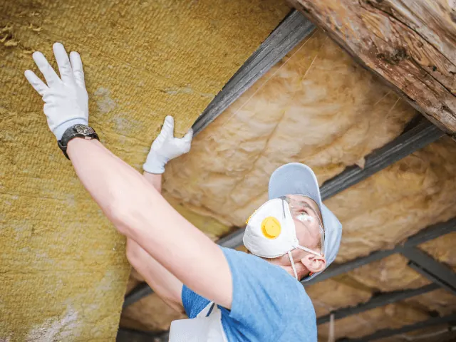
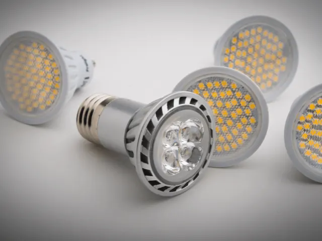
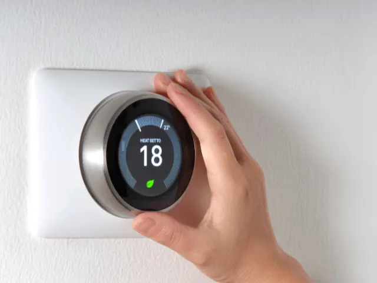

Partnerbijdrage
Met deze 5 tips bespaar je écht op jouw energierekening
Gepubliceerd op 29 december 2022, bijgewerkt op 15 augustus 2023

De energieprijzen zijn op dit moment torenhoog. Op dit moment betaal je drie tot vier keer zoveel als een jaar geleden. En aan de prijsstijging lijkt in 2023 nog geen einde te komen. Veel mensen zitten met de handen in het haar. Maar laten we er op een positieve manier naar kijken. Er zijn namelijk 5 manieren om écht geld te besparen op jouw energierekening. Welke dat zijn lees je in dit artikel.
Tip 1: Investeer in een energiezuinige woning
Op dit moment is geld besparen op de energierekening voor veel huishoudens prioriteit nummer 1. Dit scheelt op de korte en lange termijn heel veel geld. Een van de manieren om dit te doen is investeren in een energiezuinige woning. Zo is het aanschaffen van een warmtepomp een goed idee. Dit apparaat is in feite een omgekeerde koelkast. Het haalt namelijk warmte van buiten naar binnen, namelijk uit de bodem, lucht of grondwater. Via een zogeheten ‘binnen unit’ in jouw woning wordt de warmte aan het verwarmingssysteem doorgegeven. Naast een warmtepomp is ook het aanschaffen van zonnepanelen en/of een vloerverwarming een goede manier om te investeren in een energiezuinige woning.

Tip 2: Haal energiezuinige huishoudelijke apparaten in huis
Een van de meest simpele manieren om te besparen op de energierekening is om je oude apparaten te upgraden met nieuw en energiezuinige modellen. Die zijn speciaal ontworpen om minder energie te gebruiken en toch dezelfde prestaties te leveren. Huishoudelijke apparatuur als koelkasten, wasmachines en airconditioners behoren tot de grootste energieverbruikers. Wist je dat alleen al een koelkast, afhankelijk van het merk, gemiddeld tussen de 50 en 400 kWh per jaar verbruikt? Een upgrade kan dus een groot verschil maken.
Tip: Haal de stekker uit het stopcontact
Veel elektronische apparaten gebruiken nog steeds energie wanneer ze zijn uitgeschakeld of op ‘stand-by’ staan. Dit staat bekend als ‘sluipverbruik’. Het is ontzettend zonde van de energie en jouw zuurverdiende geld. Haal dus na het gebruik de stekker uit het stopcontact. Tip: gebruik eventueel een stekkerdoos om meerdere apparaten in huis tegelijkertijd uit te schakelen.
Hoe gebruik je jouw wasmachine zo energiezuinig mogelijk?
Naast de koelkast is ook de wasmachine een grootverbruiker als het om energie gaat. Een gemiddelde wasbeurt kost 2500 tot 3000 Watt aan stroom. Niet fijn voor je energierekening! Maar gelukkig zijn er verschillende manieren om jouw wasmachine zo energiezuinig mogelijk te gebruiken:
- Was je kleren in koud water in plaats van warm water.
- Gebruik het juiste waterniveau voor de hoeveelheid wasgoed die je wast. Te veel water gebruiken is niet nodig en kost energie.
- Was alleen volle ladingen wasgoed.
- Gebruik het kortste wasprogramma dat geschikt is voor de kleding die je wast.
- Overweeg de aanschaf van een energiezuinige wasmachine, want die is ontworpen om minder energie en water te gebruiken dan oudere modellen.
- Onderhoud jouw wasmachine regelmatig door het pluizenfilter schoon te maken en te controleren op lekkages of andere problemen die de efficiëntie kunnen beïnvloeden.

Tip 3: Gebruik energiezuinige verlichting
Haal zo snel mogelijk energiezuinige verlichting in huis, want daarmee bespaar je op een eenvoudige manier veel energie én geld. Wij raden aan om LED-lampen te gebruiken.
Ze verbruiken tot wel 90 procent minder energie dan de traditionele gloeilamp! Bovendien zijn ze veiliger omdat er minder hitte vrijkomt en gaan ze jarenlang mee. LED is vaak iets duurder dan traditionele verlichting. Laat je echter niet weerhouden door de hoge prijs, want uiteindelijk bespaar je door het lagere energieverbruik veel geld.
Hoe werkt LED-verlichting?
Laten we even verder duiken in de wereld van de LED-verlichting. Ze gebruiken minder energie dan gloeilampen omdat ze efficiënter zijn in het omzetten van elektriciteit in licht. Gloeilampen produceren licht door een gloeidraad te verhitten. Dit is erg inefficiënt omdat het zowel energie als warmte verspilt. LED lampen gebruiken daarentegen een halfgeleider om elektriciteit om te zetten in licht. Dit betekent dat ze licht geven wanneer er stroom in de juiste richting door heen wordt gestuurd. Dit is een efficiënt proces omdat LED lampen dezelfde hoeveelheid licht kunnen produceren met veel minder elektriciteit dan gloeilampen.
Tip 4: Installeer een slimme thermostaat
Verwarming en koeling vormen een aanzienlijk deel van jouw energierekening. Dit maakt het zeer belangrijk om je verwarmings- en koelsysteem effectief te beheren. Met een ‘slimme’ en programmeerbare thermostaat kun je verschillende temperaturen instellen voor verschillende tijden van de dag. Op die manier bespaar je energie wanneer je van huis bent. En natuurlijk geniet je van comfort en warmte als je wel de huismus uithangt Dankzij een slimme thermostaat hoef je dus niet aan comfort in te boeten en geniet je wel van een lagere energierekening.

Tip 5: Verminder je warmwatergebruik
Warm water is een andere grote energieverbruiker in huis. Hoog tijd dus om het gebruik er van te verminderen. Hoe? Door korter te douchen, jouw kleuren in koud water te wassen en de vaatwasser alleen te laten draaien als hij vol is. Een andere optie is investeren in een zogeheten waterbesparende douchekop. Het is speciaal ontworpen om minder water te gebruiken dan traditionele douchekoppen. De hoeft namelijk minder hard te werken om de De douche te verwarmen. Dit komt goed uit wanneer je liever niet met een hoge water- en energierekening geconfronteerd wil worden.
Draag een steentje bij aan een beter milieu
Naast waterbesparing dragen douchekoppen met een laag debiet ook bij aan een beter milieu. Door minder water te gebruiken help je de hoeveelheid geproduceerd afvalwater te verminderen, waardoor rivieren, meren en andere natuurlijke waterbronnen beter worden beschermd.
Minder waterverbruik, toch comfortabel douchen
Ondanks het lage waterverbruik hoef je echt niet aan comfort in te leveren. Er zijn diverse douchekoppen met geavanceerde functies beschikbaar, zoals meerdere straalsoorten en hogedrukstralen.
Leef comfortabel, maar verminder jouw ecologische voetafdruk
Door de bovenstaande tips te volgen bespaar je écht veel energie. En dat is niet alleen beter voor jouw portemonnee, maar ook voor het milieu. Wacht dus niet langer en investeer in een duurzame woning, energiezuinige apparaten en LED-verlichting. Installeer ook een ‘slimme thermostaat’ en verminder jouw warm watergebruik. Op die manier leef je comfortabel én verminder je tegelijkertijd jouw ecologische voetafdruk. Klinkt goed, toch?